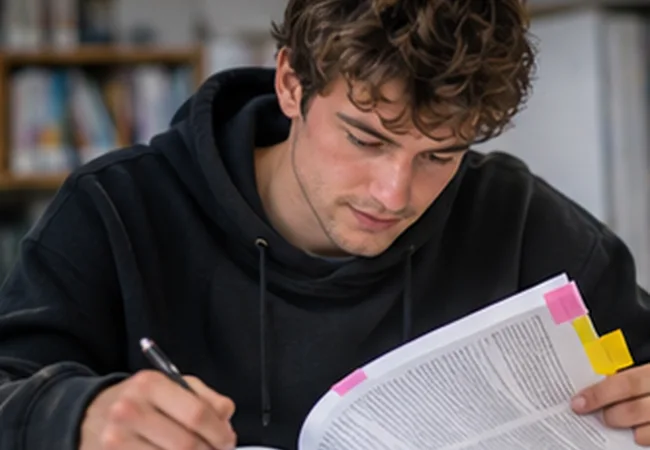

Læs forskning med et kritisk blik
En forskningsartikel kan være relevant, uden at dens konklusion kan overføres direkte til din klasse. Her lærer du at undersøge, hvad der er undersøgt, hvordan det er gjort, og hvad resultaterne kan bruges til.
Til læreruddannelse, læsevejlederuddannelse og diplomopgaver. Anslået arbejdstid: 20 til 30 minutter.

Når du læser forskning, er spørgsmålet ikke kun, om konklusionen lyder overbevisende. Du skal kunne forklare, hvilke data den bygger på, hvilke usikkerheder der er, og hvordan det har betydning for dine egne didaktiske valg.
Hvad ville forskerne finde ud af?
Begynd med forskningsspørgsmålet, ikke med konklusionen. Hvilket problem undersøger artiklen? Hvilke elever, undervisningsformer eller læseprocesser handler den om? Et studie af begyndende afkodning i 1. klasse kan ikke uden videre bruges som dokumentation for den bedste arbejdsform i en 8. klasse.
Notér i én sætning
“Forfatterne undersøger [hvad] hos [hvem] i [hvilken sammenhæng] for at belyse [hvilket spørgsmål].” Skriv gerne sætningen, før du læser resultatafsnittet.
Hvordan er undersøgelsen gennemført?
Se på deltagere, udvælgelse, indsamling og analyse. En interviewundersøgelse kan give indsigt i elevers erfaringer, men viser ikke i sig selv, hvor udbredte erfaringerne er. En måling af læsehastighed kan vise udvikling over tid, men siger ikke alene, hvorfor udviklingen skete.
| Se efter | Spørg dig selv |
|---|---|
| Deltagere | Hvor mange, hvem, og hvordan er de udvalgt? |
| Metode | Interview, observation, test, intervention eller forskningsoversigt? |
| Sammenligning | Hvad sammenholdes resultaterne med? |
| Usikkerhed | Hvad har forfatterne selv peget på som begrænsninger? |
| Overførbarhed | Ligner undersøgelsens rammer den praksis, jeg vil bruge den i? |
Hvad viser materialet, og hvad er stadig usikkert?
Skeln mellem det målte eller beskrevne fund og forskernes forklaring på fundet. Særligt i små eller praksisnære undersøgelser kan flere forhold spille ind samtidig: ekstra øvetid, lærerens støtte, elevens motivation eller valg af opgave.
Vær varsom med store ord som beviser, altid og virker for alle. Formulér hellere præcist, hvad studiet giver belæg for. Det gør ikke din argumentation svagere. Det gør den mere troværdig.
To konklusioner om samme fiktive undersøgelse
Tænkt undersøgelse: En lærer afprøver lytte-læsning i fire uger med seks elever. Efter forløbet læser eleverne mere af den udvalgte tekst, og de beskriver større lyst til at deltage. Der er ingen sammenligningsgruppe, og undervisningen omfatter også ekstra voksenstøtte.
“Undersøgelsen beviser, at lytte-læsning øger alle ordblinde elevers læsekompetence.”
Påstanden generaliserer til en anden målgruppe, en anden effekt og en sikkerhed, data ikke kan bære.“I dette korte forløb deltog de seks elever mere aktivt i tekstlæsningen. Undersøgelsen kan ikke afgøre, om forandringen skyldtes lytte-læsning, ekstra støtte eller begge dele.”
Formuleringen skelner mellem observation, mulig forklaring og begrænsning.Vurder en artikel på ti minutter
- Find forskningsspørgsmålet. Skriv det om med dine egne ord.
- Markér to oplysninger om deltagere og metode.
- Understreg én konklusion, og find det belæg, der understøtter den.
- Notér mindst én begrænsning eller en mulig alternativ forklaring.
- Forklar til sidst, hvad du forsvarligt kan bruge undersøgelsen til i undervisning eller vejledning.
Mit metodeblik
Brug feltet til en egen artikel. Undlad personoplysninger om elever.
Noterne gemmes lokalt i din browser. Brug ikke feltet til identificerbare elevoplysninger.Sådan bruger du forskningen i din opgave
Henvis ikke til forskning som pynt i teoriafsnittet. Vælg det, der faktisk hjælper dig med at undersøge din problemformulering. Skriv, hvad undersøgelsen viser, hvordan den er udført, og hvordan dens begrænsninger påvirker din fortolkning.
En brugbar skriveform
“Undersøgelsen viser … blandt … og på baggrund af …. Det er relevant for min problemstilling, fordi …. Jeg kan dog ikke ud fra undersøgelsen konkludere ….”
Spørg også, om en anden undersøgelse eller en anden teoretisk position kunne udfordre din forklaring. Det viser, at du arbejder undersøgende frem for blot at lede efter bekræftelse.
Læs videre
Guiden er en generel hjælp til kilde- og metodekritik, ikke en erstatning for dit studieholds litteratur eller de formelle eksamenskrav.
Eksemplet er fiktivt. Kontrollér altid originalundersøgelsens metode og konklusioner, før du bruger den som belæg.
Arbejd videre med din egen opgave
Brug metodeblikket, når du udvælger forskning til problemformulering, analyse og diskussion.
Guide til faglig argumentationTræn din argumentation
Omsæt dit metodeblik til en sammenhængende, fagligt begrundet tekst.